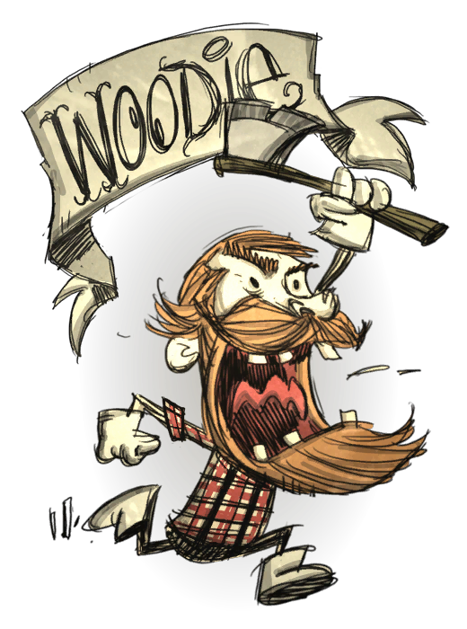

150 200 150
他是一个伐木工人。开局自带一个无耐久的红斧子（Lucy），砍树速度极快。砍到一定数量的数目后或在月圆之夜会变成海狸，此状态下无物品栏且可以吃木材回复木头值，木头值为零时变回伍迪，扣除精神。变身为海狸的伍迪可做除草叉以外所有工具可做的事（相当于无敌状态）。
如果伍迪在短时间内斩太多树,或是在月圆之夜,他会变身成为海貍.在过程中使用甚么斧头去斩树是不重要的, 但大约要 用斧头砍树砍38次来转行变化. 在海貍状态时,地图将不能开启, 原本有的状态例,即生命,饱食度和理智将会消失不见,只余下一个木头值（Log Meter）. 木头值会以每2.5秒下降2点的速度扣减海貍状态下,格子是不存在的,所有原本在格子的东西都会掉在地上, 包括 斧头. 当木头值下降至0, 玩家就会回复正常变回 伍迪,在第2天的早上醒过来, 而生命/饱食度/理智均变成50.任何在海貍状态下不主动攻击的怪物,都会从生变回主动攻击 (以本来是否主动计算),而且很有可能会将玩家杀死,因为玩家只有50点生命而且没有护甲.海貍状态可以进行斩树,挖起植物,挖矿石, 破坏部份大理石建筑 ,挖起墓地和兔子洞,最后亦是最重要的,可以跟怪物作战. 他的普通攻击等同 触手尖刺 (51) 同时可以抵销80%伤害.海貍状态有无限时间的夜视能力,所以对暗影怪免疫。
海貍状态下,玩家应该做的事：破坏三层的蜘蛛巢、试试杀死蜘蛛女王、杀死触手、杀死树精、挖矿等等。